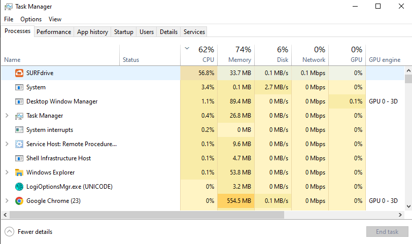

De logische laag bestaat uit het besturingssysteem (of OS, afkorting voor Engelse ‘Operating System’). Voorbeelden van besturingssystemen zijn Android, Apple iOS (voor tablets en smartphones) en Windows, macOS, Linux, ChromeOS (voor laptops en desktops). Dit is de systeemsoftware die ervoor zorgt dat je apparaat werkt, dat apps kunnen draaien en dat ze veilig en stabiel gebruik maken van de hardware. Besturingssystemen zijn een andere soort software dan de apps die je hebt geïnstalleerd.
Iconen van vijf besturingssystemen: Android, Apple (iOS en macOS), Linux, Windows, ChromeOS.
(Bron: Freepik - Flaticon)
Alle communicatie tussen apps (toepassingenlaag) en hardware (fysieke laag) verloopt via het besturingssysteem. Het besturingssysteem vormt daarmee de schakel tussen apps en hardware. Het zorgt dat alles soepel en veilig werkt, zonder dat apps of gebruikers zich met de techniek hoeven bezig te houden. Het besturingssysteem stuurt bijvoorbeeld het beeldscherm van je computer en je speakers aan. Ook zorgt het besturingssysteem voor de communicatie tussen de onderdelen binnen in de computer.
Het besturingssysteem heeft een aantal taken en levert een aantal diensten aan andere lagen:

De taakbeheer van Microsoft Windows geeft een overzicht van de actieve programma's.
Koppel de taak van het besturingssysteem aan het voorbeeld:
| Taak van het besturingssysteem | Voorbeeld |
|---|---|
| A. Beheer van taken | 1. Start een app op |
| B. Beheer van randapparatuur | 2. Stuurt de wifi-chip aan |
| C. Beheer van bestanden | 3. Opent een foto |
| D. Beveiliging en rechtenbeheer | 4. Blokkeert microfoon voor onbekende app |
Wat is de belangrijkste taak van het besturingssysteem in de logische laag?
Wat zou er gebeuren als er geen geheugenbeheer zou zijn in het besturingssysteem?
ANTWOORD: Dan kunnen meerdere apps tegelijk het geheugen gebruiken zonder coördinatie, wat leidt tot fouten, vertraging of vastlopen van het systeem.Welke taken voert een besturingssysteem uit om apps te laten samenwerken met de hardware? (Meerdere antwoorden mogelijk)
Leg uit hoe procesbeheer en apparaatbeheer samenwerken wanneer je een video-opname maakt met je tablet.
Antwoordvoorbeeld:Procesbeheer start de camera-app en houdt deze actief. Apparaatbeheer zorgt dat de camera werkt en geeft videobeelden door aan de app.
Een besturingssysteem is specifiek ontworpen voor een bepaald type apparaat. Voor smartphones en tablets gebruik je bijvoorbeeld Android, of iOS op Apple-apparaten. Op Apple-laptops en desktops draait macOS, en op Chromebooks ChromeOS. Andere laptops en desktopcomputers gebruiken meestal Windows of Linux. Omdat toepassingen communiceren met het besturingssysteem, zijn apps afgestemd op een specifiek besturingssysteem. Een app die voor iOS is ontwikkeld, kan daarom niet zonder aanpassingen worden geïnstalleerd op Android.
De tabel hieronder geeft een overzicht van de grootste verschillen tussen de vier besturingssystemen voor computers en laptops.
| Kenmerk Toelichting |
Windows | macOS | Linux | ChromeOS |
|---|---|---|---|---|
| Prijs Wat kost het besturingssysteem en/of apparaat? |
Besturingssysteem is betaald (vaak meegeleverd met de pc). Grote keuze in de samenstelling van een apparaat, en dus ook de prijs. | Duurder. Alleen Apple-hardware mogelijk. | Gratis en open source. | Chromebooks zijn zeer goedkoop. |
| Vrijheid Hoeveel controle heb je over het systeem? |
Beperkt: Microsoft bepaalt veel. | Beperkt: Apple sluit systeem af. | Volledige controle mogelijk. | Beperkt tot Google’s keuzes. |
| Gemak voor beginners Hoe makkelijk is het om ermee te werken zonder veel technische kennis? |
Groot gemak: herkenbaar voor velen. | Groot gemak: intuïtieve vormgeving. | Lager gemak: hangt af van de versie. | Zeer hoog gemak: alles draait om eenvoud. |
| Software-aanbod Welke programma’s kun je gebruiken? |
Zeer breed: veel games en kantoorsoftware | Breed: sterke creatieve software, minder games | Afhankelijk van distributie, veel open source | Alleen webapps en Android-apps, geen installeerbare programma's mogelijk. |
| Geschikt voor Voor welk type gebruiker is dit OS het meest geschikt? |
Algemeen gebruik, bedrijven, gamers | Creatieven, Apple-gebruikers | Technische gebruikers, programmeurs | Scholieren, internetgebruikers, lichte taken |
Zoek uit welk besturingsysteem jouw telefoon of laptop gebruikt, en welke versie van het besturingssysteem.
Tips:
Vul de onderstaande tabel in. Zoek daarvoor op internet voor informatie over iOS en Android op het internet of in het lesmateriaal.
| Kenmerk | Toelichting | iOS (Apple) | Android (Google / anderen) |
|---|---|---|---|
| Gebruiksgemak | Hoe makkelijk is het systeem voor beginners? | ... | ... |
| Aanpasbaarheid | Kun je instellingen, apps en uiterlijk naar wens aanpassen? | Beperkt; Apple bepaalt veel | ... |
| App-aanbod | Hoeveel apps zijn er beschikbaar in de app store? | ... | Groot aanbod, meer variatie, wisselende kwaliteit |
| Beveiliging | Hoe goed beschermt het OS je gegevens en privacy? | ... | ... |
| Toestelkeuze | Op hoeveel soorten toestellen is dit OS beschikbaar? | Alleen op iPhones, iPads | ... |
VOORBEELD ANTWOORD:
| Kenmerk | Toelichting | iOS (Apple) | Android (Google / anderen) |
|---|---|---|---|
| Gebruiksgemak | Hoe makkelijk is het systeem voor beginners? | Erg gebruiksvriendelijk en intuïtief | Ook makkelijk, maar verschilt per merk |
| Aanpasbaarheid | Kun je instellingen, apps en uiterlijk naar wens aanpassen? | Beperkt; Apple bepaalt veel | Zeer aanpasbaar; veel instellingen en thema’s |
| App-aanbod | Hoeveel apps zijn er beschikbaar in de app store? | Zeer groot, streng gecontroleerd | Groot aanbod, meer variatie, wisselende kwaliteit |
| Beveiliging | Hoe goed beschermt het OS je gegevens en privacy? | Goede privacy, streng beleid | Redelijk goed, maar verschilt per fabrikant en instelling |
| Toestelkeuze | Op hoeveel soorten toestellen is dit OS beschikbaar? | Alleen op iPhones, iPads | Op meerdere modellen van verschillende merken |